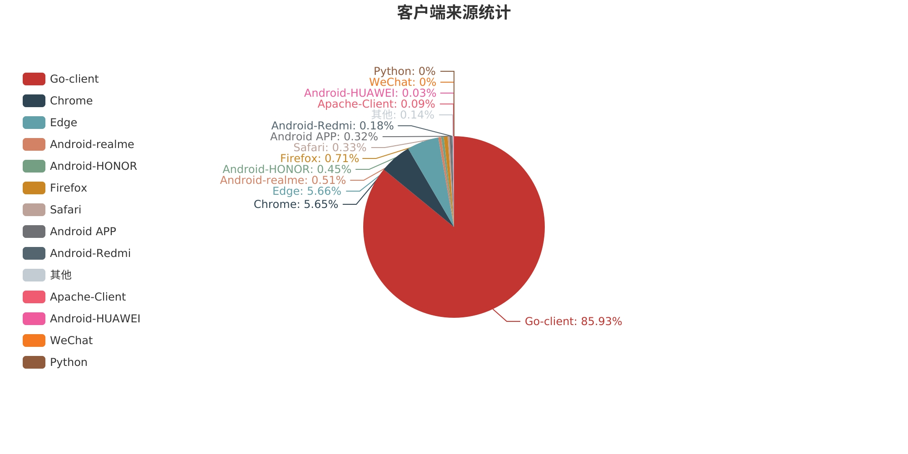

| 平台稳定性统计 | |||||||
| 当月故障次数 | 当日故障次数 | ||||||
| 0 | 0 | ||||||
说明: 状态码5xx大于5%视为一次故障
| 数据流量统计 | |||||||
| PV(Page View)数 | UV(Unique Visitor)数 | 出口总流量(MB) | |||||
| 31129 | 172 | 226.24 | |||||
|

| ||||||||||||||||||||||||||||||
|
 | ||||||||||||||||||||||||||||||
htpp状态码含义: 1xx表示信息(如: mqtt)，2xx表示成功，3xx表示重定向，4xx表示客户端错误，5xx表示服务器或后台程序错误 |
| ||||||||||||||||||||||||||
|
| ||||||||||||||
| 请求方法统计 | |||||||
| 请求方法 | 总数 | ||||||
| POST | 18506 | ||||||
| GET | 12554 | ||||||
| DELETE | 38 | ||||||
| PUT | 27 | ||||||
| HEAD | 4 | ||||||
| 请求路径统计 | |||||||
| URL | 总数 | ||||||
| /api/v1/pub/current/base/cardevice/car/counts | 13136 | ||||||
| /mqtt | 6494 | ||||||
| /api/v1/pub/current/base/cardevice/monitoring/list | 1510 | ||||||
| /api/m1/expressbox/parcels | 813 | ||||||
| /api/v1/pub/current/base/areas | 655 | ||||||
| /api/v1/pub/current/base/car/status | 528 | ||||||
| /api/v1/pub/current/menutree | 486 | ||||||
| /api/m1/expressbox/lockers?car_id=adv-gt-72 | 458 | ||||||
| /api/m1/task?area_id=6333c9992efa840008a1ab12&car_id=adv-gt-72&status=executing&size=-1&page=0 | 424 | ||||||
| /api/m1/expressbox/wechat/user/orders | 366 | ||||||